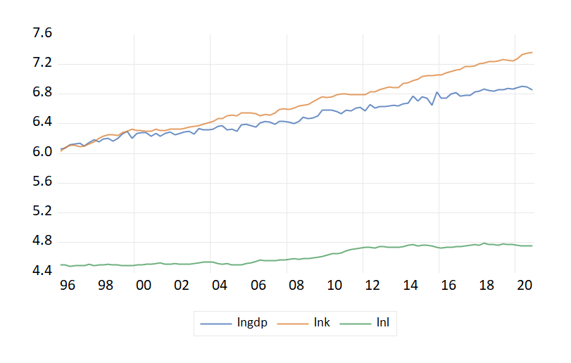
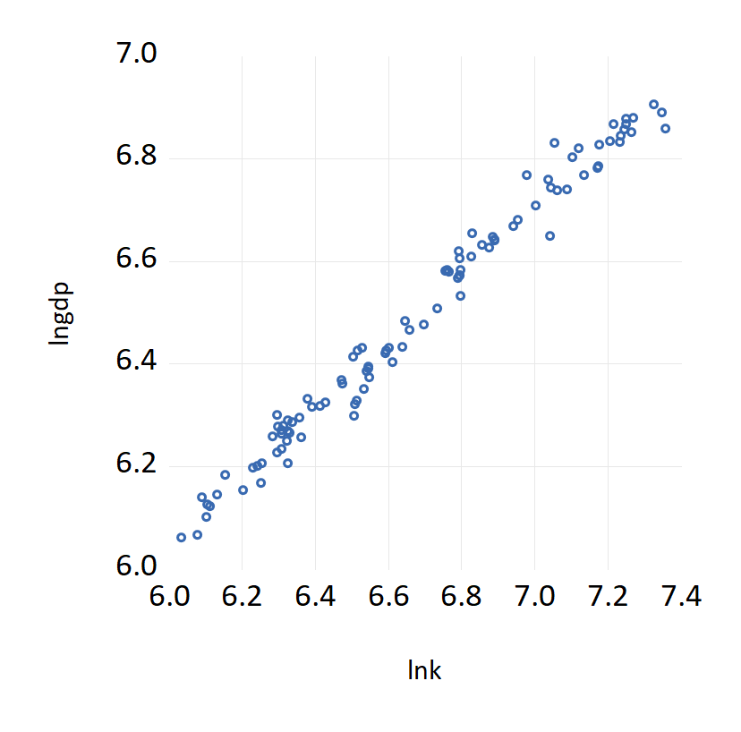
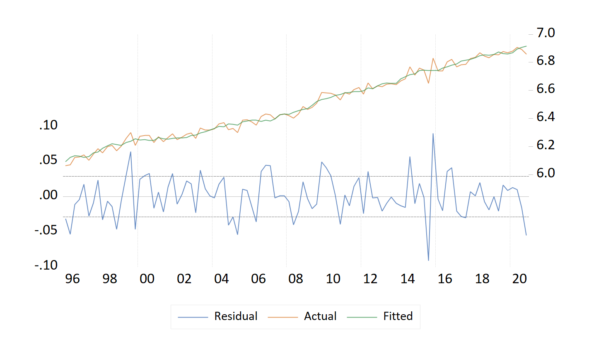
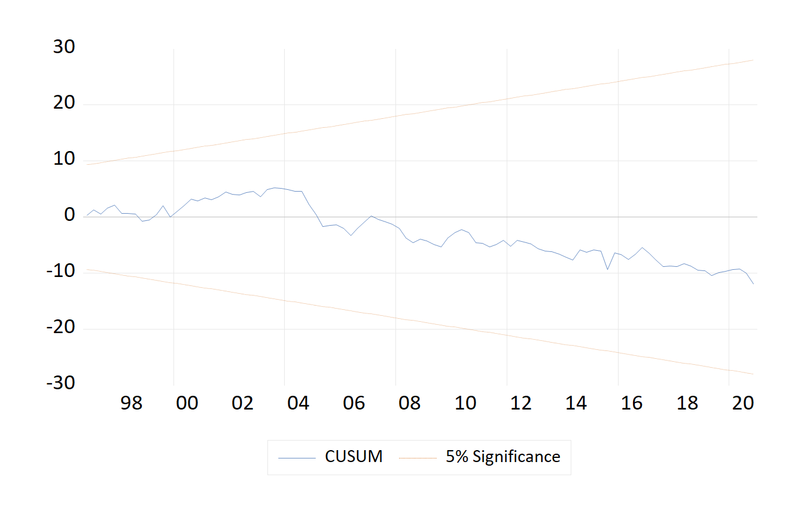
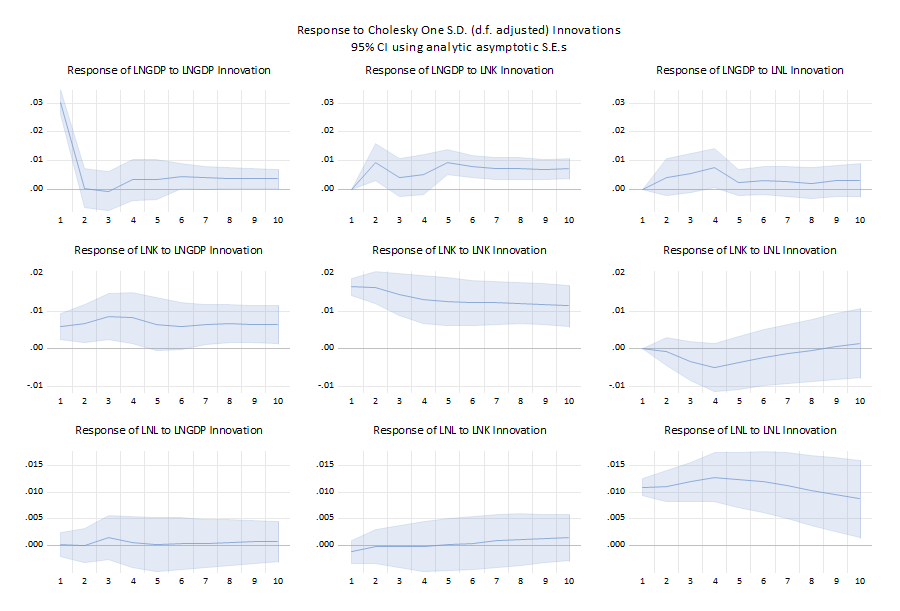

Drive EViews 13 from Python — or let an AI assistant drive it for you. A Model Context Protocol server and a Python library, sharing one engine. Every number comes from EViews itself.
An AI assistant can write EViews code, but on its own it cannot run it — so it never learns whether the code worked, what the coefficients were, or which sample was used. It guesses, and guessed numbers are invented numbers.
With MCP in place the assistant runs the code, reads the real output, and continues from there. If the ADF test says p = 0.886, it sees 0.886.
An assistant drives EViews conversationally. Best for exploration, diagnostics and getting unstuck.
Write a script that drives EViews. Best for the final, reproducible version that ships with your paper.
There is no second statistics engine here. Every coefficient on this page was computed by EViews.
Windows with a licensed EViews installation, and Python 3.10 or newer.
:: with pandas support, recommended
pip install "eviews-mcp[pandas]"
This pulls mcp and pywin32 automatically.
python -c "from eviews_mcp import EViews; print(EViews().status())"
{'connected': True, 'progid': 'EViews.Manager', 'version': '13.0',
'workfile': None, 'scratch_dir': 'C:\\ev_mcp'}
'connected': True is the thing to look for. EViews starts hidden if it
was not already running — the first launch takes a few seconds.
Use it as a library straight away, or connect an assistant below.
Any MCP-capable client works. Two of the most common:
claude mcp add eviews -- eviews-mcp
{
"mcpServers": {
"eviews": {
"command": "eviews-mcp"
}
}
}
eviews-mcp is not found,
run where eviews-mcp and use the full path instead — remembering to double
the backslashes inside JSON.
Confirm it worked by asking the assistant to “check the EViews connection”:
Connected to EViews 13.0 via EViews.Manager Scratch directory: C:\ev_mcp Active workfile: none open (use create_workfile or open_workfile)
A full ARDL exercise on 100 quarterly observations, exactly as it ran. The data were generated with a known long-run relationship — lngdp = 1.2 + 0.55·lnk + 0.35·lnl — so you can check the tool recovers it.
“Import C:\ev_mcp\guide\macro.csv, then describe the workfile.”
Imported C:\ev_mcp\guide\macro.csv. Series now present: DATE, LNGDP, LNK, LNL Workfile: MACRO Page: Macro Frequency: Q Page range: 1996Q1 2020Q4 Current sample: 1996Q1 2020Q4 Obs in range: 100 Obs in sample: 100 Objects: 4
EViews read the date column and structured the page itself. Confirming 100 observations takes five seconds and catches the worst class of silent error — see Traps.
“Run an ADF test on lngdp in levels, then on the first difference.”
Null Hypothesis: LNGDP has a unit root
Exogenous: Constant
Lag Length: 2 (Automatic - based on SIC, maxlag=12)
t-Statistic Prob.*
Augmented Dickey-Fuller test statistic -0.500089 0.885575
Test critical values: 1% level -3.49917
5% level -2.89155
10% level -2.58285
*MacKinnon (1996) one-sided p-values.
Null Hypothesis: D(LNGDP) has a unit root
Exogenous: Constant
Lag Length: 1 (Automatic - based on SIC, maxlag=11)
t-Statistic Prob.*
Augmented Dickey-Fuller test statistic -12.1778 0.0001
Test critical values: 1% level -3.49917
5% level -2.89155
10% level -2.58285
Unit root not rejected in levels (p = 0.886), strongly rejected in differences. lngdp is I(1), so the ARDL bounds framework applies.
equation ardl1.ardl(deplags=4, reglags=4) lngdp lnk lnl
Dependent Variable: LNGDP Method: ARDL Sample: 1996Q2 2020Q4 Included observations: 99 Dependent lags: 4 (Automatic) Automatic-lag linear regressors (4 max. lags): LNK LNL Deterministics: Restricted constant and no trend (Case 2) Model selection method: Akaike info criterion (AIC) Number of models evaluated: 100 Selected model: ARDL(1,0,0) Variable Coefficient Std. Error t-Statistic Prob.* LNGDP(-1) 0.0155166 0.0978296 0.158608 0.874314 LNK 0.53458 0.059789 8.94111 3.02733e-14 LNL 0.365216 0.085789 4.25714 4.86164e-05 C 1.13554 0.249799 4.54582 1.61133e-05 R-squared 0.985599 Mean dependent var 6.49484 Adjusted R-squared 0.985144 S.D. dependent var 0.239988 S.E. of regression 0.029251 Akaike info criterion -4.18624 Sum squared resid 0.0812841 Schwarz criterion -4.08139 Log likelihood 211.219 Hannan-Quinn criter. -4.14382 F-statistic 2167.22 Durbin-Watson stat 2.02168 Prob(F-statistic) 2.60070e-87
“Show me the cointegrating relationship.”
Deterministics: Rest. constant (Case 2)
------------------------------------------------------------
CE = LNGDP(-1) - (0.543006*LNK + 0.370972*LNL + 1.153436)
------------------------------------------------------------
Variable * Coefficient Std. Error t-Statistic Prob.
------------------------------------------------------------
LNK 0.543006 0.025016 21.70645 0.0000
LNL 0.370972 0.080765 4.593229 0.0000
C 1.153436 0.222325 5.188072 0.0000
------------------------------------------------------------
Note: * Coefficients derived from the CEC regression.
Breusch-Godfrey Serial Correlation LM Test: Null hypothesis: No serial correlation at up to 2 lags F-statistic 1.47903 Prob. F(2,93) 0.233167 Obs*R-squared 3.05184 Prob. Chi-Square(2) 0.217421
No serial correlation (p = 0.233). Saving produces an ordinary .wf1 that opens in the EViews GUI like any other — nothing locks your work inside the tool.
Graphs cannot be returned as text, so they are written to a file. Every image below was exported from the session above with a single call, at 200 dpi. Click any of them to open the full-resolution file.

export_object("g_series", "series-lines.png")
graph g_scat.scat lnk lngdp
export_object("eq1", …, view="resids")
view="rls(q)"
view="impulse(10,m)"A correlogram is a table, so it comes back as text rather than as a graph. The plotted autocorrelation bars are drawn by EViews and do not survive the trip across, but every number does.
Sample: 1996Q1 2020Q4 Included observations: 100 Lag AC PAC Q-Stat Prob 1 0.957591 0.957591 94.4767 2.48e-22 2 0.925714 0.105209 183.669 1.31e-40 3 0.897812 0.047168 268.431 6.74e-58 4 0.868596 -0.016849 348.592 3.53e-74 5 0.840447 -0.00186816 424.432 1.6e-89 6 0.806486 -0.0839782 495.009 9.99e-104 7 0.778659 0.0404537 561.508 4.71e-117 8 0.750175 -0.015085 623.901 1.7e-129 9 0.723545 0.0144668 682.581 3.84e-141 10 0.694374 -0.0433673 737.225 6.37e-152 11 0.664384 -0.0258689 787.814 7.83e-162 12 0.633812 -0.040077 834.376 7e-171
graph.save "figure.png"
writes an EMF file with a .png name. This package derives the format
from the extension and passes it explicitly, and a save that produces no file raises an
error instead of reporting success.
Graphs: png jpg pdf emf wmf bmp gif eps tex. Tables: csv rtf txt html.
The twenty-four tools an assistant has available. You never name them yourself — you ask in words — but knowing the vocabulary helps you ask precisely.
| Tool | Purpose |
|---|---|
| Session | |
eviews_status | Connection, version and active workfile. Start here when debugging. |
reset_eviews | Discard the instance and start a clean one. |
set_eviews_visible | Show or hide the EViews window. |
| Workfiles | |
create_workfile | New page by frequency and range, e.g. quarterly 1990Q1–2020Q4. |
open_workfile | Open an existing .wf1 or .wf2. |
save_workfile | Save, optionally to a new path. |
close_workfile | Close one or all open workfiles. EViews caps how many may be open. |
workfile_info | Name, page, frequency, range, sample and object count. |
list_objects | Inventory, filterable by EViews type. |
set_sample | Restrict the estimation sample. |
| Running code | |
run_eviews_code | Main tool. Runs a block of EViews program code — loops, conditionals, subroutines. |
run_program_file | Run an existing .prg, with arguments. |
command | A single command line. |
| Reading results | |
show | Renders any object or view as text. This is how results are read. |
evaluate | One value from an expression, e.g. eq1.@r2. |
describe_object | Object type, plus summary statistics for a series. |
| Analysis | |
equation_coefficients | Coefficients as a clean table of numbers, for reasoning about rather than reading. |
unit_root | Tests the levels then successive differences, and reports the order of integration. |
diagnose_equation | Breusch-Godfrey, White and Jarque-Bera in one call, each with its verdict. |
| Data | |
read_data | Series as an aligned table or full-precision CSV. |
write_series | Write values from the conversation into a series. |
import_data | Read .xlsx, .csv, .dta, .sav and more. |
export_data | Write series to a file. |
export_object | Save an object — the way to retrieve graphs. |
Every EViews view is reachable through show, so diagnostics need no special
support. Ask in words — “test for heteroskedasticity” — and the assistant picks the view.
| Ask for | View | What you get |
|---|---|---|
| Estimation output | default | The coefficient table |
| Unit root test | uroot | ADF on a series |
| Unit root on differences | uroot(dif=1) | ADF on Δx |
| Descriptive statistics | stats | Mean, SD, skew, Jarque-Bera |
| Correlogram | correl | ACF and PACF |
| Residual table | resids(t) | Actual, fitted, residual |
| Serial correlation | auto(2) | Breusch-Godfrey LM test |
| Heteroskedasticity | white | White test |
| Coefficient restriction | wald c(2)=c(3) | Wald test |
| Coefficient covariance | coefcov | Variance–covariance matrix |
| Long-run relation (ARDL) | cointrel | Cointegrating equation |
| Error-correction results | ecresults | ECM form |
| Granger causality (VAR) | testexog | Block exogeneity Wald tests |
| Impulse responses (VAR) | impulse(t) | IRF table |
| Variance decomposition | decomp(10,t) | Forecast error decomposition |
| Stability (CUSUM) | rls(q) | CUSUM test against 5% bounds |
| Recursive coefficients | rls(c) | Coefficient paths with plus/minus 2 S.E. |
resids and impulse
are graphs by default; adding t — resids(t),
impulse(t) — asks EViews for the table form instead.
Conversation is good for finding a specification. It is poor for a paper, because a chat log is not a method section. The same work as a script:
from eviews_mcp import EViews
with EViews() as ev:
ev.import_file(r"C:\data\macro.csv")
# Order of integration
for name in ("lngdp", "lnk", "lnl"):
print(ev.show(name, "uroot"))
print(ev.show(name, "uroot(dif=1)"))
# Long-run model
ev.run("equation ardl1.ardl(deplags=4, reglags=4) lngdp lnk lnl")
print(ev.show("ardl1"))
print(ev.show("ardl1", "cointrel"))
print(ev.show("ardl1", "auto(2)"))
print("R-squared:", ev.value("ardl1.@r2"))
ev.export_object("ardl1", "residuals.png", view="resids")
ev.save_workfile(r"C:\data\study.wf1")
Run it with python study.py and you get identical results on any machine
with EViews. That file belongs in your replication package; the transcript does not.
frame = ev.to_dataframe(
["lngdp", "lnk", "lnl"])
frame.describe()
Indexed by observation label — 1996Q1, 1996Q2, …
idx = pd.period_range(
"2005Q1", periods=40, freq="Q")
df = pd.DataFrame({...}, index=idx)
ev.from_dataframe(df)
A dated index sets the page frequency and span, so dates stay aligned. Text columns are skipped.
BROKEN_COMMAND is not defined or is an illegal command in "BROKEN_COMMAND" in MCP_77B699157F3B.PRG on line 2.
Properties of EViews automation that produce wrong numbers with no error message. The package defends against each one — worth knowing if you also write your own EViews scripts.
| The trap | What this package does |
|---|---|
| Importing into an open workfile truncates your data. EViews cuts the file to the open page's length. A 100-row CSV read into a 12-row page becomes 12 rows, silently — every result afterwards computed on 12% of the data. | Imports create a new workfile sized to the file. Merging into the current page is opt-in. |
The current sample governs writes, not just estimation. Under a restricted
sample, writing 100 values writes only those inside it; the rest stay NA. |
Writes default to the whole page. |
| A restricted sample persists until changed, so a later estimation silently uses it. | Every output header names the sample used. Read the Sample: line. |
Graph exports ignore the file extension. graph.save "figure.png"
writes an EMF file with a .png name. |
Format derived from the extension and passed explicitly; a save producing no file raises. |
| Relative paths are not relative to you. EViews resolves them against its own working directory, so your file appears somewhere unrelated. | All paths are made absolute before being handed over. |
| EViews limits how many workfiles may be open, then refuses to create another. | close_workfile keeps long sessions healthy. |